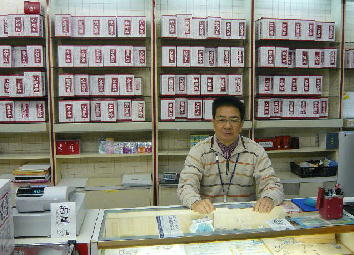

漢方薬の専門！
漢方のセイシンドー スマートフォン用サイトです。
メールで無料漢方相談！
口臭・鼻臭症・膿栓などすごく悩む事なのに病院へ行っても相手にされない･･････。
こんな経験はありませんか？
また、何度も繰り返す、ヘルペス（特に性器ヘルペス）や陰部（性器）の痒み・肛門のかゆみ・膀胱炎・頻尿・めまい・ニキビなど。また、大人まで持ち越した夜尿症や、大人になってから出てきた夜尿症で、相談できずに悩んでいる方。現代医学では、治らない病気や症状でも漢方医学なら良くなる可能性もあります。
あきらめる前に、是非一度ご相談下さい。
もちろん、ご相談は無料です。

★ご注意
メールによるご相談の場合、迷惑メール防止のための設定をされていますと、こちらから返信が出来ません。ご相談ときは、必ずこの設定を無効にされるか、受信許可するドメインに「seisindo.com」を追加しておいてください。受信リストにメールアドレスを登録される場合は、ms@seisindo.comを登録してください。
臨時休業等がありますので、必ず「お知らせ」をご覧下さい。
パソコンからはこちらをご覧ください。
店頭でのご相談は、完全予約制になっております。必ずご予約の上でお越し下さい
■ メールによる無料漢方相談！

(C) Copyright 2011− Kanpo no SEISINDO. All rights reserved.